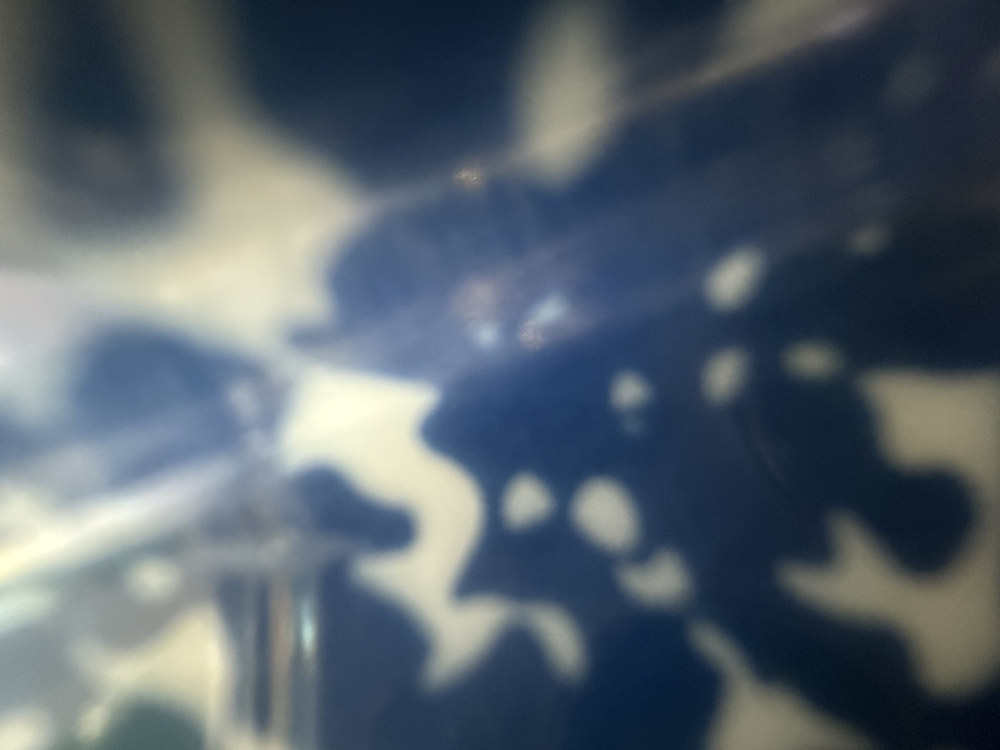

시즌 1 여름 감각 다이빙 · 이번 호의 감각 — 청각
듣고 있었지만,
듣지는 않았습니다.
우리 집 세탁실 천장은 철판이에요. 비가 오면 소리가 크게 납니다. 처음엔 시끄럽다고만 생각했지요.
탁탁. 척척. 퍽퍽.
그런데 어느 날 그 소리를 가만히 듣고 있는데, 기분이 좋아지는 거예요. 한참 뒤에야 알았습니다. 예전에 남아공에 살 때 듣던 빗소리와 닮았다는 걸요. 몸이 먼저 기억하고 있었던 거지요. 저보다 먼저요.
소리에는 끝이 있습니다
소나기는 시작과 끝이 분명해요. 후두둑 떨어지기 시작하고, 한참 쏟아지다가, 어느 순간 잦아듭니다. 그리고 비가 그친 뒤에도 소리는 남아요. 처마 끝에서 똑, 똑, 하고요.
그런데 우리는 그 끝까지 들어본 적이 거의 없습니다. 비가 오면 창문을 닫고, 음악을 틀고, 이어폰을 꽂아요. 소리를 소리로 덮으면서 하루를 보내지요.
이어폰을 빼면 생기는 일
한번은 이어폰 없이 걸어봤어요. 처음엔 좀 허전하더라고요. 그런데 몇 분 지나니까 소리들이 하나씩 올라옵니다. 멀리서 오는 차 소리, 누군가의 웃음, 매미, 그리고 제 발소리. 매일 걷던 길인데 처음 듣는 소리가 있었어요.
그 길에 원래 있던 소리들입니다. 사라진 적이 없었어요. 제가 덮고 다녔을 뿐이지요.
— 올리한나 드림

이번 호의 감각 처방 · 청각
비가 그칠 때까지, 끝을 들어봅니다
오늘 비가 온다면 창가에 5분만 서 계세요. 음악도 영상도 끄고요. 비가 안 오는 날이면, 퇴근길에 이어폰을 빼고 딱 10분만 걸어보세요. 들리는 소리를 세 개만 세어보시고요. 그중 하나는 분명, 매일 그 자리에 있었는데 처음 듣는 소리일 거예요.
빗소리를 끝까지 들어본 적 있나요?
오늘은 끝까지 들어보세요.